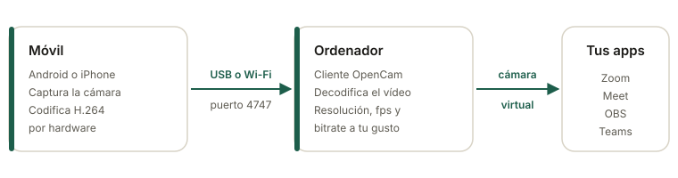

Resolución, fps y bitrate
Elige 1080p, 720p o 480p, los fotogramas por segundo y el bitrate. Baja la calidad si la Wi-Fi va justa.
OpenCam usa la cámara de tu Android o iPhone en Zoom, Meet, Teams u OBS. Por USB o Wi-Fi, con la calidad que elijas. Libre y sin marcas de agua.
Cargando la última versión…

El móvil hace el trabajo pesado: graba y comprime el vídeo por hardware. El ordenador solo lo recibe y lo ofrece como una cámara más.
Elige 1080p, 720p o 480p, los fotogramas por segundo y el bitrate. Baja la calidad si la Wi-Fi va justa.
Por cable para la menor latencia, o por la red de casa. El ordenador encuentra el móvil solo, sin escribir direcciones.
Si se suelta el cable o se corta la red, vuelve a conectar sin que tengas que reiniciar nada.
En Windows aparece como OpenCam Virtual Camera y en Linux como un /dev/video. Cualquier app la puede usar.
Usa el codificador del móvil, así que gasta poca batería y el retraso es bajo.
Sin cuentas, sin anuncios y sin telemetría. El protocolo está documentado y puedes compilarlo todo tú.
Necesitas la app en el móvil y el cliente en el ordenador. OpenCam está en desarrollo: cada tarjeta dice con sinceridad qué está probado y qué solo compila.
Tests en CI, sin probar en un móvil
Compila en CI, sin probar en Windows
Compila, sin probar con cámara
/dev/videoN.v4l2loopback.Solo salida Y4M, sin cámara virtual
Sin descarga
Para usuarios avanzados
opencam_vcam.dll) para registrarla con regsvr32.Todas las descargas salen de la última release en GitHub.
Tres pasos y lo tienes en tu videollamada.
Instala OpenCam, da permiso de cámara y pulsa Iniciar.
Por USB o por la misma Wi-Fi. El cliente recibe el vídeo y lo ofrece como cámara.
En Zoom, Meet, Teams u OBS, selecciona la cámara de OpenCam.
adb).opencam-desktop # busca el móvil solo
opencam-desktop usb # solo Android por USB
opencam-desktop wifi # solo por Wi-Fi
opencam-desktop 192.168.1.50:4747 # una IP concreta# Crea la cámara virtual
sudo modprobe v4l2loopback video_nr=10 card_label="OpenCam" exclusive_caps=1
# Busca el móvil solo: Android por USB (adb), iPhone por USB (usbmuxd) o Wi-Fi
./opencam-desktop-linux-x86_64 --device /dev/video10
# O fuerza un modo: usb, wifi, iphone o IP:4747
./opencam-desktop-linux-x86_64 wifi --device /dev/video10Aún no hay cámara virtual en macOS. El cliente saca vídeo Y4M que puedes ver o capturar:
./opencam-desktop-macos-arm64-sin-camara-virtual-solo-y4m | ffplay -Pásale estas opciones al cliente. Por ejemplo: opencam-desktop --width 1280 --height 720 --fps 60 --bitrate 6000
| Opción | Por defecto | Qué hace |
|---|---|---|
--width --height | 1920 × 1080 | Resolución que se pide al móvil. |
--fps | 30 | Fotogramas por segundo (si el móvil los admite). |
--bitrate | 8000 kbps | Calidad del vídeo. Bájalo si la Wi-Fi va justa. |
| (dirección) | auto | auto, usb, wifi, iphone o IP:4747. |
--serial | Elige el móvil si hay varios conectados. | |
--adb | Ruta a adb si no está en el PATH. | |
--no-reconnect | No reintenta si se corta la conexión. |
Sí. Es código abierto, sin anuncios, sin marcas de agua y sin límites de resolución.
USB da menos retraso y carga el móvil a la vez (en Android necesita la depuración USB activada). Wi-Fi es más cómodo; si ves cortes, baja el bitrate con --bitrate.
En Android la emisión sigue en segundo plano. En iPhone la app tiene que estar en primer plano, porque iOS no deja usar la cámara en segundo plano.
Todo compila y pasa los tests en CI, pero aún falta probarlo en más hardware real. Si lo pruebas, cuéntanos cómo te ha ido: es lo que más ayuda ahora.